Simple BMI
Press Calculate or Enter to see results. Clear starts a new patient.
Treatment criteria
Criteria for treatment with / without weight-related comorbidity
MedicationDM2, or BMI ≥ 27 / 30
SurgeryBMI ≥ 30 / 35
About the weight-loss estimates
The typical weight loss after sleeve (LSG) and bypass (RYGB) uses median % total weight loss (%TWL) from the PCORnet bariatric study, with interquartile ranges (IQR, the middle half of patients) from SOPHIA.
Between 1 and 5 years the calculator estimates in a straight line between these values. They reflect outcomes before GLP-1 medications were widely used, and individual results vary.
Links
Bariatric procedure diagrams
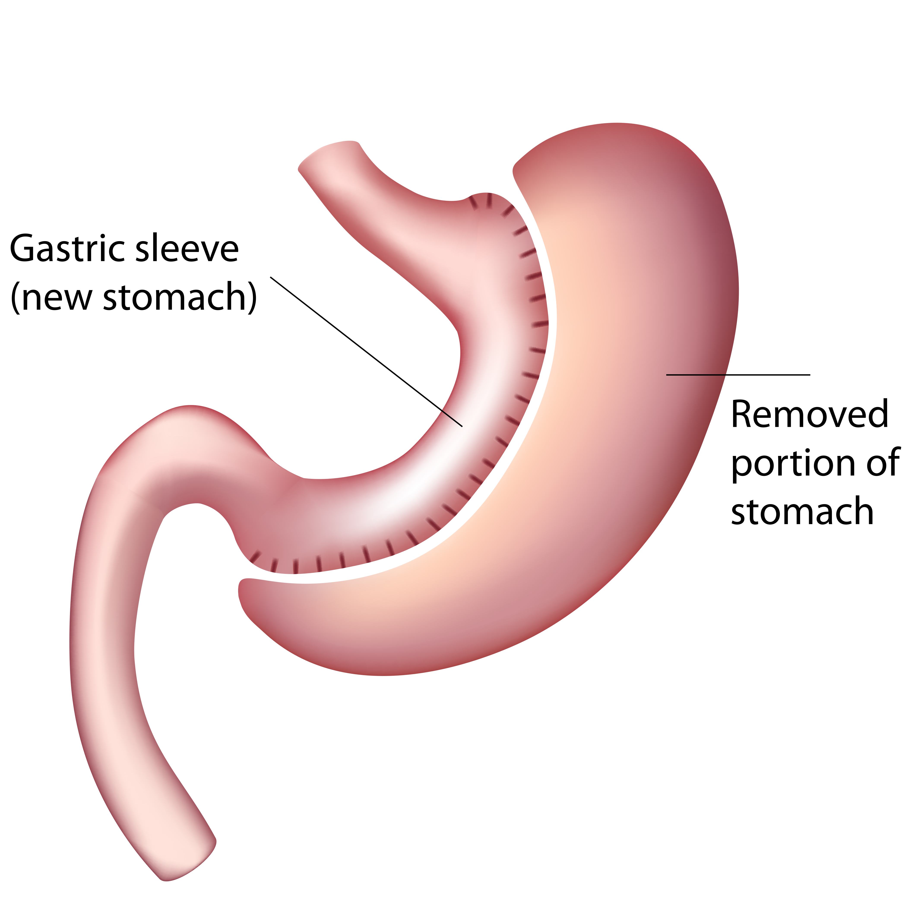
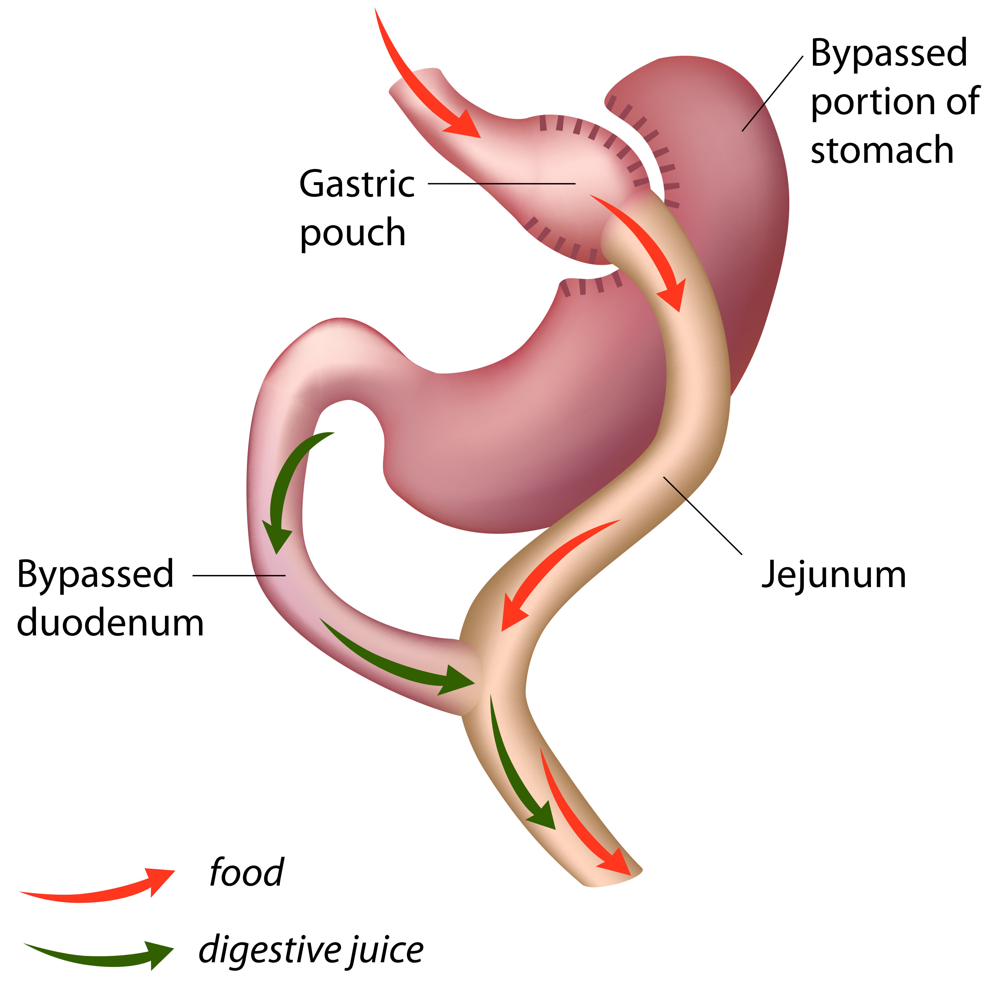
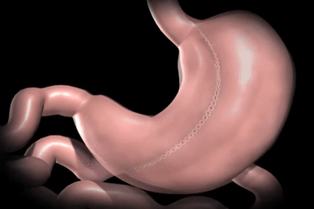
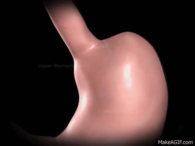
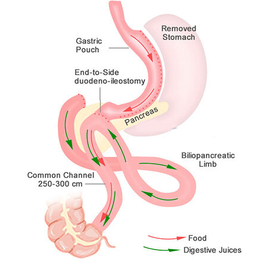
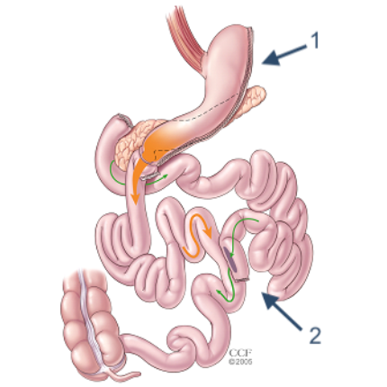
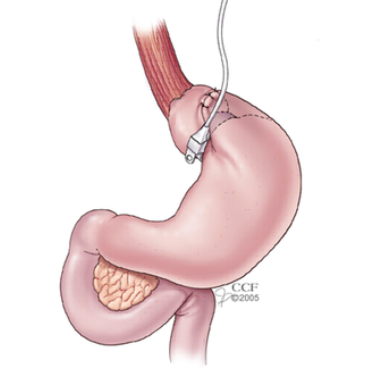
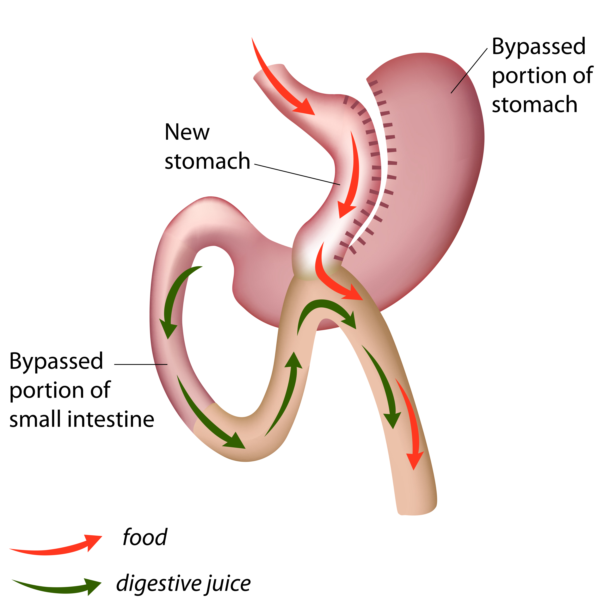
Videos
Contact card for MGH patients
Hernia and foregut
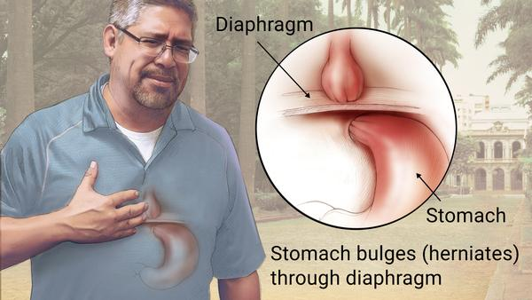
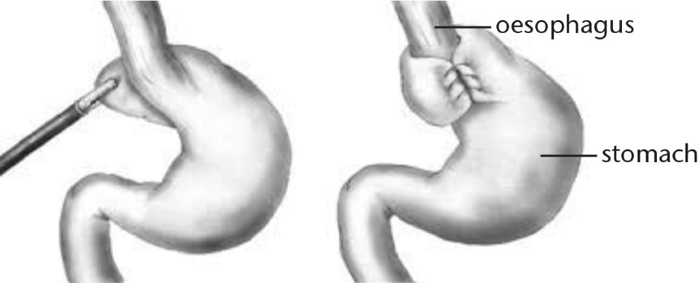
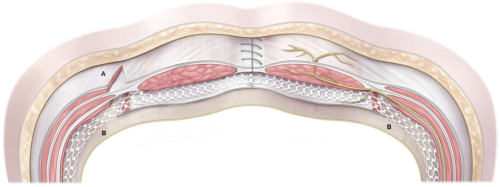
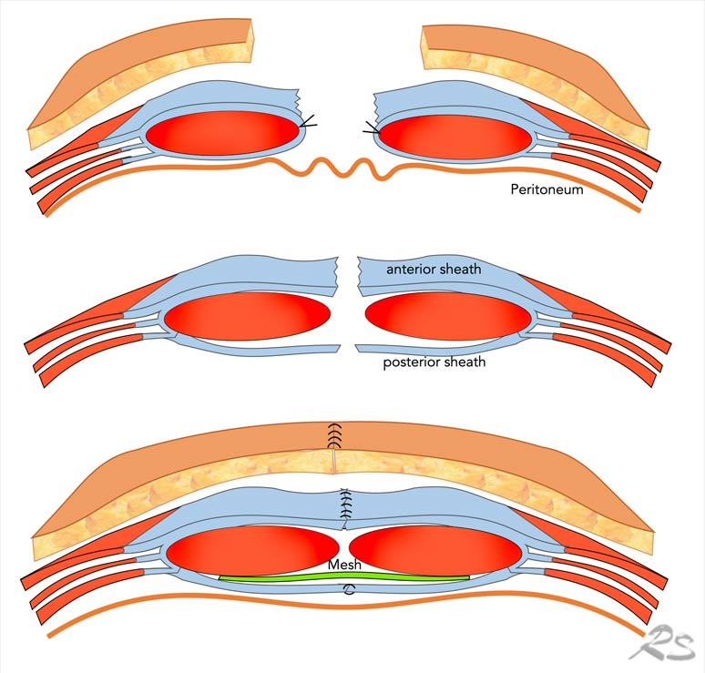
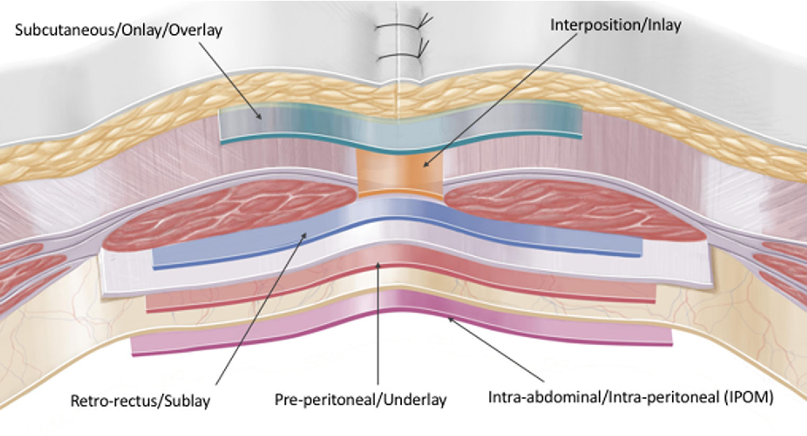